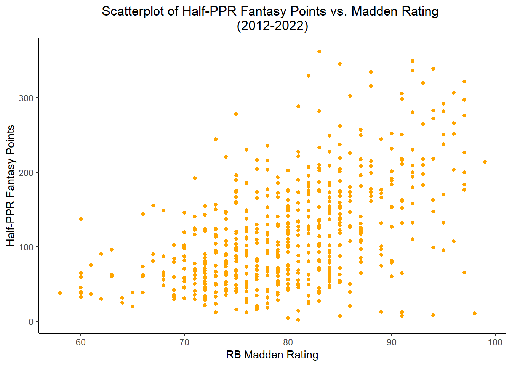
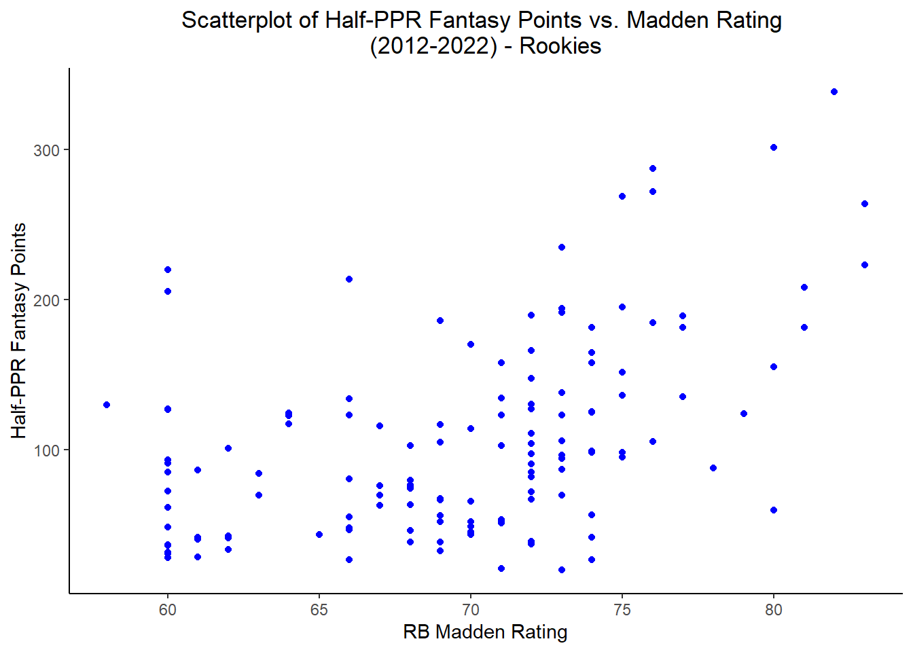
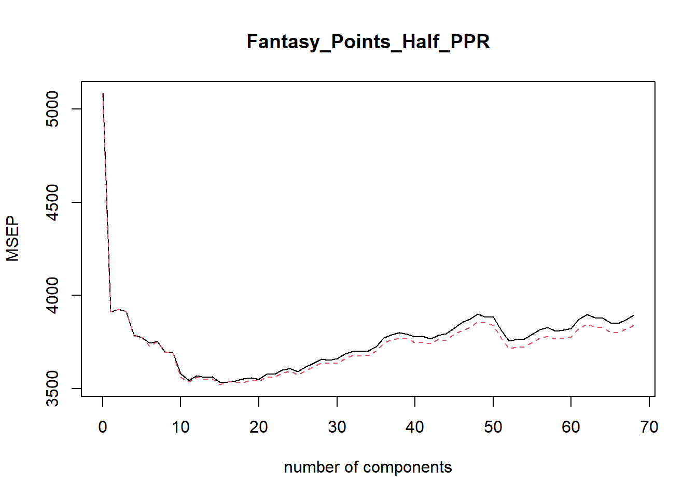

NFL RB Fantasy Football Performance Predictions
8/30/2023
Chapter 1 RB Fantasy Performance
1.1 Introduction
Objective
Predict NFL running back Half-PPR fantasy points for the 2023-2024 season through various models (linear regression, principle component regression, partial least squares, decision tree, random forest, and gradient boost)
For non-rookie running backs, the 2012-2022 random forest model performed the best, with a test error of +/- 63.5 fantasy points.
For rookie running backs, the 2012-2022 linear regression model performed the best, with a test error of +/- 54.4 fantasy points.
I aim to compare the results of the model predictions for running backs at the end of the NFL season in February to see how well it performed. Please see the Recommendations section for 2023 predictions.
Background
Fantasy football is a game in which regular people create their team of football players from the NFL. You compete in a league of usually 8-12 teams, and every year, individuals draft players to their team based on who they expect to score the most points that season.
Consequentially, I was looking for a way to improve my draft strategy to find high-value running backs in the late rounds of my fantasy football draft - as well as avoid drafting ‘busts.’ I will use their fantasy football average draft position (ADP) as a reference point.
How are fantasy points calculated for running backs?
Rushing Yards = 1 point per 10 yards
Receiving Yards = 1 point per 10 yards
Receptions = 0.5 points per 1 reception
Rushing/Receiving Touchdown = 6 points
Fumble = -2 points
Using the conversions above, I calculated a running back’s total fantasy points for the year.
Data
The data collected was from the 2012 to 2022 NFL seasons on running backs, mainly from Pro-Football-Reference for performance/game stats and OverTheCap/SporTrac for salary information. All salary information was adjusted to 2023 for inflation. Please check the references section for the full list of sources.
The 2023 season will be the test data set, a list of the top ~75 projected running backs for this season. The goal is to use only known data going into the season, as opposed to the data we would find out at the end of the season, so I can predict player fantasy points at the beginning of the season & draft my team based on this prediction.
1.2 Methodology/Data Prep
Here are some of the libraries that I used to explore this project.
library(tidyverse)
library(bookdown)
library(ggplot2)
library(car)
library(corrplot)
library(Hmisc)
library(plyr)
library(readxl)
library(caret)
library(glmnet)
library(nortest)
library(MASS)
library(pls)
library(tree)
library(randomForest)
library(gbm)
library(neuralnet)Next, we load in the dataset. Please see https://github.com/tylerfarr5/rb-fantasy-football for the full dataset.
full.rb.data <- read_excel("NFL Fantasy Football Predictive Model.xlsx")
full.rb.data <- full.rb.data[1:79]A quick note about the data - I chose to compile many different data sources into one file, so I found it easier to compile everything in Microsoft Excel first and then read into R.
Here are the minimum specifications on running backs each year:
Minimum 40 attempts per season
Minimum 4 games played in a season
Minimum 75 rush yards per season
At least one snap in a season to count towards “Years Pro”
‘Rookie Contract Year’ means players in the final year of their rookie contract (or 5th year option) + did not resign early or get traded to another team by the start of the season
Above specifications are voided if BetMGM published odds for player to have the most rushing yards - then they are automatically included in the dataset. This helped account for some big injuries.
Missing Data
For missing salary information from OverTheCap, I chose to replace it with salary information from SporTrac, the next closest source on salary information.
Any player without a provided Madden rating was imputed with the lowest level in the game, which is 60.
All players who did not have reported rushing odds at the beginning of their season were imputed with +1000 to the lowest reported odds player. For example, if the lowest player was +20000 to have the most rushing yards in a season, then every player who did not have reported odds for that specific season was +21000.
As we can see in the histogram below, there was a clear right skew to the distribution of players and their odds
hist(full.rb.data$Most_RushYds_Odds, main = "Histogram of Player Rush Yards Odds - Pre-Transformation", xlab = "BetMGM Regular Season Most Rushing Yards Odds")After imputing, we see the histogram is still skewed, but more filled out now.
hist(full.rb.data$Most_RushYds_Odds, main = "Histogram of Player Rush Yards Odds - Post-Transformation", xlab = "BetMGM Regular Season Most Rushing Yards Odds")
To call attention to which rows were imputed on this odds variable, I also created an “Imputed Rush Yards Odds” variable that is a 1 if it was imputed, and 0 otherwise. This will be seen later in the model creation as an interaction term.
Rookies
Lastly, a lot of the variables in the data set were based off of the running backs previous season performance, so for rookies, since they didn’t have a previous NFL season, their values were imputed to 0. These rookies were split into their own dataset from the rest of the data as their 0’s in previous seasons would have skewed our results.
We see that there are 161 rookies and 719 non-rookies through 2012 to 2022. We will filter them into their own dataset as such.
rookies <- full.rb.data[(full.rb.data$YearsPro == 1),]
non.rookies <- full.rb.data[(full.rb.data$YearsPro != 1),]## Rookies Non.Rookies
## 1 161 719Reading in the Test Data
Here, we read in the test data, which will be used for predicting 2023 players. This is as of 8/16/2023 - the day of my fantasy football draft. We go through and apply the same transformations as we did to the train set.
Imputing Rush Yds Odds for 2023 dataset (Max Odds is +15000)
ff2023 <- ff2023 %>%
mutate(Most_RushYds_Odds = ifelse(Year == 2023 & is.na(Most_RushYds_Odds), 16000, Most_RushYds_Odds))Rookie/Non-Rookie Split for 2023 dataset
Before exploring the data, I did a train/test split of the 2012-2022 data. I chose to take 80% of the data to train on, as I believe there is not as much variability year to year. I also made sure to stratify by year so there wasn’t any over/under representation from a specific year.
There are 2 separate splits, one for non-rookies and one for rookies.
- Non-Rookies
set.seed(5)
train.index <- createDataPartition(non.rookies$Year, p = 0.80, list = FALSE)
train <- non.rookies[train.index,]
test <- non.rookies[-train.index,]## [1] "Non-Rookie Train Data - Rows: 580"## [1] "Non-Rookie Test Data - Rows: 139"- Rookies
set.seed(5)
train.index2 <- createDataPartition(rookies$Year, p = 0.80, list = FALSE)
train2 <- rookies[train.index2,]
test2 <- rookies[-train.index2,]## [1] "Rookie Train Data - Rows: 134"## [1] "Rookie Test Data - Rows: 27"1.3 Exploratory Data Analysis (EDA)
Here, we will dive a little deeper into some of the variable relationships in the training data before we build the model.
1.3.1 Non-Rookies
We start by looking at a correlation matrix of variables in the model (not including previous season performance variables - that will be done separately). We see some obviously strong correlations, like CapNum and CashSpent, which are both salary information for players. There’s also a very strong relationship between a player’s Madden rating and their average draft position (ADP). This relationship makes sense, as highly rated players will be drafted higher.
In terms of the target variable - Half PPR Fantasy Points - we see some variables with noticeable relationships, like RB salary information, where they were drafted in the NFL, fantasy average draft position, their Madden rating, and a slight relationship with height.
corrs.int <- train[c(4,12,13,15,18,19, 60,61,64,65,73,77:79)]
res <- cor(corrs.int)
corrplot::corrplot(res,type = "upper", order = "hclust", tl.col = "black", tl.srt = 45, title = "Correlation Matrix on NFL Running Back Data (2012-2022)", mar=c(0,0,1,0))Next, the target variable was explored in relation to previous season data. I used a function I found online to flatten out the correlation matrix to pair relationships.
There are some obvious strong correlations like previous targets & previous receptions - or if an RB has a lot of red zone carries inside the 20, they are likely to have a lot of red zone carries inside the 10. I will mention this multicollinearity concern later in the report.
Some of the previous-season variables that have a noticeable relationship with half-PPR fantasy points are rush yards per game, total rush touchdowns, attempts per game, rush yards per season, total first down rushes, receptions per game, and red zone carries inside the 20 and 10.
# ++++++++++++++++++++++++++++
# flattenCorrMatrix - flattens out correlations to 2x2
# ++++++++++++++++++++++++++++
# cormat : matrix of the correlation coefficients
flattenCorrMatrix <- function(cormat) {
ut <- upper.tri(cormat)
data.frame(
row = rownames(cormat)[row(cormat)[ut]],
column = rownames(cormat)[col(cormat)[ut]],
cor =(cormat)[ut]
)
}
prev.corrs <- train[c(20:57, 79)]
res2<-rcorr(as.matrix(prev.corrs))
previous.correlations <- flattenCorrMatrix(res2$r)
head(arrange(previous.correlations, desc(cor)),20)## row column cor
## 1 PrevTgt PrevRec 0.9890096
## 2 Prev_Rec_Per_Game Prev_Tgt_Per_Game 0.9847446
## 3 Prev_RZ_RushAtt_Ins20_Perc Prev_RZ_RushAtt_Ins10_Perc 0.9760648
## 4 Prev_Att Prev_RushYds 0.9738595
## 5 Prev_Rec_Yds Prev_1D_Rec 0.9644164
## 6 Prev_Rush_Yds_Per_Game Prev_Att_Per_Game 0.9604575
## 7 Prev_RushYds Prev_1D_Rush 0.9596675
## 8 PrevRec Prev_Rec_Yds 0.9573421
## 9 PrevTgt Prev_Rec_Yds 0.9539287
## 10 Prev_RZ_RushAtt_Ins10_Perc Prev_RZ_RushAtt_Ins5_Perc 0.9515645
## 11 Prev_Rec_Per_Game Prev_RecYds_Per_Game 0.9466384
## 12 Prev_Att Prev_1D_Rush 0.9433204
## 13 Prev_RecYds_Per_Game Prev_Tgt_Per_Game 0.9421951
## 14 Prev_Yds_Per_Rec Prev_Yds_Per_Tgt 0.9405131
## 15 PrevRec Prev_1D_Rec 0.9306556
## 16 PrevTgt Prev_1D_Rec 0.9274192
## 17 Prev_Att Prev_RZ_RushAtt_Ins20_Perc 0.9201166
## 18 Prev_RZ_RushAtt_Ins20_Perc Prev_RZ_RushAtt_Ins5_Perc 0.9184891
## 19 Prev_RushYds Prev_Rush_Yds_Per_Game 0.9163199
## 20 Prev_1D_Rush Prev_RZ_RushAtt_Ins20_Perc 0.8998130Visual Explorations
I was interested to see if a player’s first year on a new team would affect their fantasy performance. In the box plot below, we see there is a significant difference. In fact, a running back has significantly higher half-PPR fantasy points staying on the same team rather than their first year on a new team.
Next, “boom” or “bust” running backs are typically those with ‘big-play ability.’ Those can be explored by 40+ yard runs in the previous season. The boxplots below show a statistically significant difference in the average half-PPR fantasy points in at least one of the groups. Upon further inspection, we see a significant difference between 0 and 2 or higher. 7 and 8 were not included in post-hoc testing due to there only being a single occurrence in the data. There is a generally increasing trend in the boxplots as well, so there is likely a relationship between the number of 40+ yard runs and a running back’s fantasy production.
ggplot(data = train, aes(x = factor(Prev40Runs), y = Fantasy_Points_Half_PPR)) +
geom_boxplot(fill = "orange", alpha = 0.2) +
labs(x = "Prev 40+ Yard Runs", y = "Half-PPR Fantasy Points", title = "Boxplot of Half-PPR Fantasy Points vs. Previous 40+ Yard Runs \n(2012-2022)") +
theme_classic() +
theme(plot.title = element_text(hjust = 0.5))Intuitively, there is a relationship between a player’s average fantasy draft position at the beginning of the season and their corresponding fantasy performance. Players taken first overall in a fantasy draft are 1.0, while those taken last are in 150-300 range.
This scatterplot supports this theory with a clear cone-shape relationship. There is a lot more variability in fantasy points for lower PPR average draft positions. In comparison, higher ADPs tend to have smaller variability and lower total fantasy points. I confirmed statistically that the correlation does not equal 0 here.
In the boxplot below, we see a clear, statistically significant difference in average half-PPR fantasy points between players who ran 1600+ yards in a season and those who did not. In fact, those who did run 1600+ yards are statistically greater than not in terms of average half-PPR fantasy points.
The variability on players who ran for 1600+ yards in a previous season is much smaller than that of players who did not. Generally speaking, running backs who have 1600+ yards in a season usually average a high number of half-PPR fantasy points (~300 points), so I think this more importantly highlights that they do take a steep drop in production the following season as the box hovers around low 200 points.
Franchise-tagged players arise out of contract disputes for running backs, where a team can keep a player on their roster for one year at a pre-determined salary while they have another year to figure out the contract. This boxplot examines players on a franchise tag for a year and how they perform vs. players who are not on a franchise tag. Those not on a franchise tag perform significantly worse than those on a franchise tag in terms of average half-PPR fantasy points.
It’s quite interesting to see how well franchise-tagged players alone perform and how tight the variability is on the boxplot.
The Madden video game provides player rankings from 60-99, with 99 overall players being the best. Although the rankings can be subject to subjectivity, I find that they are generally solid representations of player ability. The scatterplot below shows a positive relationship between a running back’s half-PPR fantasy points and their Madden rating. This was confirmed statistically to correlate differently from 0.
In this final boxplot, we examine what round a running back was drafted in the NFL draft and their corresponding average half-PPR fantasy points. There is an expected generally decreasing trend as higher-scoring players are taken in the higher rounds.
Statistically speaking, there is a significant difference between at least one of the draft rounds in terms of half-PPR fantasy points. Diving a little deeper, rounds 4, 5 and 6 have a clear statistical difference from round 2. We also see undrafted free agents (UDFA) have a statistical difference from rounds 1, 2 and 3 players.
While there are some exceptions of UDFA players who have been elite running backs (ie: Austin Ekeler), they are generally one of the lower-performing half-PPR draft rounds, as expected.

1.3.2 Rookies
Likewise, for rookies, it is intuitive that there is a relationship between a player’s average fantasy draft position at the beginning of the season and their corresponding fantasy performance. Players taken first overall in a fantasy draft are 1.0, while those taken last are in 150-300 range.
This scatterplot supports this theory with a similar cone-shaped relationship. There appears to be more variability in fantasy points for lower PPR average draft positions, while higher ADPs tend to have smaller variability and lower total fantasy points. I also confirmed statistically that the correlation does not equal 0 here.
Once again, looking at Madden rankings for rookies, the scatterplot below highlights a relatively positive relationship between a running back’s half-PPR fantasy points and their Madden rating. This was confirmed statistically to correlate differently from 0.
In this final boxplot, we examine what round a rookie running back was drafted in the NFL draft and their corresponding average half-PPR fantasy points. There is a stronger, decreasing trend, as rookies drafted in the early rounds (especially the first) have a much higher chance of coming in to a situation as the clear-cut starter, not having to compete for playing time.
Statistically speaking, we see there is a significant difference between at least one of the draft rounds in terms of half-PPR fantasy points. Diving a little deeper, rounds 2,3,4,5,6 and 7 have a clear statistical difference between round 1. We also see undrafted free agents (UDFA) have a statistical difference between rounds 1 and 2 players. This makes sense because UDFA rookie running backs will get very little playing time compared to first-round backs.

- All of the above tests were confirmed statistically by a Wilcox and Kruskal-Wallis non-parametric test, or Spearman’s correlation.
1.4 Modeling
As mentioned above, two separate data sets were created for the rookies and non-rookies. Therefore, they will have two different models as well.
A conservative alpha level of 0.025, instead of 0.05, was chosen for model significance testing since there are many observations in the data set and we need to adjust it to reflect a higher sample size.
However, during the model selection process to filter out insignificant variables, an alpha level of 0.10 was chosen to include more leeway in evaluating the variables.
To reduce multicollinearity, scaled values such as previous yards per attempt, 40+ yard rushes per attempt, or receiving yards per game were removed from the model. I chose to stick with unscaled values such as total season rushing yards, receiving yards, number of 40+ yard runs, etc.
Additionally, NFL Draft position, previous season rushing yards, previous total receptions & receiving yards, and previous red zone rushing attempts inside the 10 yard line were all removed from the model for high multicollinearity.
1.4.1 Non-Rookies
We start by looking at the non-rookies model. I created a subset of the train and test datasets of only the variables I want to look at.
train_reg2 <- train %>%
dplyr::select(-c(PlayerName, Team, Att, RushYds, RushTD, Fumble, Rec, RecYds, RecTD, RBCapNumber, RBCashSpent, OL_CapNum, OL_CashSpent, QB_CapNum, QB_CashSpent, Prev_Yds_Per_Att, Prev_Rush_Yds_Per_Game, Prev_Att_Per_Game, Prev_1DRush_Per_Att, Prev20PerAtt, Prev40PerAtt, Prev_AttPerFum, Prev_RushTDPerAtt, PrevRecPerAtt, PrevCatchPerc, Prev_Yds_Per_Rec, Prev_Yds_Per_Tgt, Prev_Rec_Per_Game, Prev_RecYds_Per_Game, Prev_Tgt_Per_Game , Prev_RecTD_Per_Rec, Prev_1DRec_Per_Rec, DraftNum, Prev_RushYds, PrevRec, Prev_RZ_RushAtt_Ins10_Perc, Prev_Rec_Yds))
test_reg2 <- test %>%
dplyr::select(-c(PlayerName, Team, Att, RushYds, RushTD, Fumble, Rec, RecYds, RecTD, RBCapNumber, RBCashSpent, OL_CapNum, OL_CashSpent, QB_CapNum, QB_CashSpent, Prev_Yds_Per_Att, Prev_Rush_Yds_Per_Game, Prev_Att_Per_Game, Prev_1DRush_Per_Att, Prev20PerAtt, Prev40PerAtt, Prev_AttPerFum, Prev_RushTDPerAtt, PrevRecPerAtt, PrevCatchPerc, Prev_Yds_Per_Rec, Prev_Yds_Per_Tgt, Prev_Rec_Per_Game, Prev_RecYds_Per_Game, Prev_Tgt_Per_Game , Prev_RecTD_Per_Rec, Prev_1DRec_Per_Rec, DraftNum, Prev_RushYds, PrevRec, Prev_RZ_RushAtt_Ins10_Perc, Prev_Rec_Yds))
test_y2 <- test_reg2$Fantasy_Points_Half_PPRModel selection resulted in the following recommended model:
Fantasy_Points_Half_PPR ~ Madden_Rating + FirstYearOnTeam + IA_RBCashSpent + PPR_ADP + PrevGT320 + Height_in + IA_OLCashSpent + YearsPro + Prev_1D_Rec + Prev_Lng_Rec + PrevGT1600 + FranchiseTag
I did notice in outlier testing that Adrian Peterson’s 2014 season was a complete outlier. He was suspended and despite being a projected top fantasy running back - only played in 1 game. He was removed from the dataset for that season.
1.4.1.1 Linear Regression
For a linear regression model, I decided to make two models. One that focuses on producing the highest R-squared, and one that has the lowest AIC. Both resulted in different models.
The R-squared model was able to explain 37.7% of the variation in half-PPR fantasy points given the following variables:
Madden Rating
First Year On Team (1 for yes, 0 for no)
Inflation-adjusted salary cash spent (salary incentives)
Average Draft Position, PPR Format
Previous Season: Over 320 Carries (1 for yes, 0 for no)
Player Height (inches)
Previous Season: Total 1st Down Receptions
Previous Season: Longest Reception
BetMGM Season Rushing Yards Leader (set before season starts)
Indicator variable for imputed rushing yards (1 if imputed, 0 if provided by BetMGM)
We could argue from the diagnostic plots below that the model meets the assumptions of linear regression.
final.mod3 <- lm(Fantasy_Points_Half_PPR ~ Madden_Rating + I(Madden_Rating^2) + FirstYearOnTeam + IA_RBCashSpent + PPR_ADP + I(PPR_ADP^2)+ PrevGT320 + Height_in + Prev_1D_Rec + I(Prev_1D_Rec^2)+ Prev_Lng_Rec + Most_RushYds_Odds + ImputedOddsRushYds + Most_RushYds_Odds:ImputedOddsRushYds, data = train_reg2)
#summary(final.mod3)
plot(final.mod3,1)
For the AIC focused model, we applied a Box Cox transformation to the Y variable, which is the only difference between the R-squared and AIC focused models. We could once again argue from the diagnostic plots below that the model meets the assumptions of linear regression.
final.mod4 <- lm(Fantasy_Points_Half_PPR^0.5 ~ Madden_Rating + FirstYearOnTeam + IA_RBCashSpent + PPR_ADP + I(PPR_ADP^2)+ PrevGT320 + Height_in + Prev_1D_Rec + Prev_Lng_Rec + Most_RushYds_Odds + ImputedOddsRushYds + Most_RushYds_Odds:ImputedOddsRushYds, data = train_reg2)
#AIC(final.mod4)
#summary(final.mod4)
plot(final.mod4,1)
1.4.1.2 Principle Component Regression
Since I had many variables that were very similar/collinear to each other, aggregating them into principle components seemed to be effective for capturing the most amount of variance between different groups of variables.
I chose to keep most of the variables in the model, only removing a limited number that aren’t relevant to the analysis, like the player’s name or the non-inflation adjusted salary information. From this, I split the dataset into a train and test matrix to proceed with PCR.
train_reg3 <- train %>%
dplyr::select(-c(PlayerName, Team, Att, RushYds, RushTD, Fumble, Rec, RecYds, RecTD, RBCapNumber, RBCashSpent, OL_CapNum, OL_CashSpent, QB_CapNum, QB_CashSpent,Year))
test_reg3 <- test %>%
dplyr::select(-c(PlayerName, Team, Att, RushYds, RushTD, Fumble, Rec, RecYds, RecTD, RBCapNumber, RBCashSpent, OL_CapNum, OL_CashSpent, QB_CapNum, QB_CashSpent,Year))
train_reg3 <- train_reg3[-c(153),] #removes Adrian Peterson 2014 outlier year
train_x3 <- model.matrix(Fantasy_Points_Half_PPR ~ ., data = train_reg3)[, -1]
train_y3 <- train_reg3$Fantasy_Points_Half_PPR
test_x3 <- model.matrix(Fantasy_Points_Half_PPR ~ ., data = test_reg3)[, -1]
test_y3 <- test_reg3$Fantasy_Points_Half_PPRFrom the results of the validation plot, it appears an “elbow” exists right around 1 or 5 components, so I will test both to see which will provide the lowest error.
set.seed(5)
pcr.fit <- pcr(Fantasy_Points_Half_PPR ~ ., data = train_reg3, scale = TRUE, validation = "CV")
validationplot(pcr.fit, val.type = "MSEP")
1.4.1.3 Partial Least Squares
Using the same training/test dataset from PCR, I will attempt to use Partial Least Squares method as well - another dimension reduction method since I have many variables that are correlated with each other.
From the results of the validation plot, there is a clear “elbow” or dip at 2 components, so I will use that for the final PLS model.
1.4.1.4 Decision Tree / Random Forest
I started with a decision tree to see if pursuing more complicated machine learning models was even worth it.
From here, I also created a random forest model. I set mtry to 21, as we typically use the number of predictors (63) divided by three.
1.4.2 Rookies
For rookies, a similar modeling process was conducted. I first had to subset the training dataset to not include any of the previous season variables, as rookies do not have any previous NFL season data since they were in college. Modeling them separately seemed like the most effective method.
train_rook_reg <- train2 %>%
dplyr::select(-c(PlayerName, Year, Team, Att, RushYds, RushTD, Fumble, Rec, RecYds, RecTD, RBCapNumber, RBCashSpent, OL_CapNum, OL_CashSpent, QB_CapNum, QB_CashSpent, Prev_Yds_Per_Att, Prev_Rush_Yds_Per_Game, Prev_Att_Per_Game, Prev_1DRush_Per_Att, Prev20PerAtt, Prev40PerAtt, Prev_AttPerFum, Prev_RushTDPerAtt, PrevRecPerAtt, PrevCatchPerc, Prev_Yds_Per_Rec, Prev_Yds_Per_Tgt, Prev_Rec_Per_Game, Prev_RecYds_Per_Game, Prev_Tgt_Per_Game , Prev_RecTD_Per_Rec, Prev_1DRec_Per_Rec, DraftNum, Prev_RushYds, PrevRec, Prev_RZ_RushAtt_Ins10_Perc, Prev_Rec_Yds, YearsPro, Prev_GP, Prev_Att, Prev_Rush_TD, Prev_1D_Rush, Prev_Lng_Run, Prev_Fmb, Prev_RZ_RushAtt_Ins20_Perc, Prev_RZ_RushAtt_Ins5_Perc, Prev20Runs, Prev40Runs, PrevTgt, Prev_Rec_TD, Prev_1D_Rec, Prev_Lng_Rec, AgeGT28, CareerCarriesGT1750, PrevGT1600, PrevGT320, RookieContractYear, FranchiseTag))
test_rook_reg <- test2 %>%
dplyr::select(-c(PlayerName, Year, Team, Att, RushYds, RushTD, Fumble, Rec, RecYds, RecTD, RBCapNumber, RBCashSpent, OL_CapNum, OL_CashSpent, QB_CapNum, QB_CashSpent, Prev_Yds_Per_Att, Prev_Rush_Yds_Per_Game, Prev_Att_Per_Game, Prev_1DRush_Per_Att, Prev20PerAtt, Prev40PerAtt, Prev_AttPerFum, Prev_RushTDPerAtt, PrevRecPerAtt, PrevCatchPerc, Prev_Yds_Per_Rec, Prev_Yds_Per_Tgt, Prev_Rec_Per_Game, Prev_RecYds_Per_Game, Prev_Tgt_Per_Game , Prev_RecTD_Per_Rec, Prev_1DRec_Per_Rec, DraftNum, Prev_RushYds, PrevRec, Prev_RZ_RushAtt_Ins10_Perc, Prev_Rec_Yds, YearsPro, Prev_GP, Prev_Att, Prev_Rush_TD, Prev_1D_Rush, Prev_Lng_Run, Prev_Fmb, Prev_RZ_RushAtt_Ins20_Perc, Prev_RZ_RushAtt_Ins5_Perc, Prev20Runs, Prev40Runs, PrevTgt, Prev_Rec_TD, Prev_1D_Rec, Prev_Lng_Rec, AgeGT28, CareerCarriesGT1750, PrevGT1600, PrevGT320, RookieContractYear, FranchiseTag))Since there were less variables in the rookie model, I did not feel a need to perform model selection here.
1.4.2.1 Linear Regression
For a linear regression model, I did not have to decide between models this time because the assumptions of linear regression were not completely met without transforming the dependent variable.
The final model explains 41.79% of the variation in half-PPR fantasy points given the following variables:
First Year On Team (1 for yes, 0 for no)
Inflation-adjusted salary (relative to team salary cap)
Average Draft Position, PPR Format
BetMGM Season Rushing Yards Leader (set before season starts)
Indicator variable for imputed rushing yards (1 if imputed, 0 if provided by BetMGM)
Interestingly, the variables selected between rookies and non-rookies are similar yet different. Looking at the diagnostic plots, the Q-Q plot is the biggest question mark; however a histogram of the residuals appears to be relatively Normal so I chose to let it pass the assumption.
rookie_lm <- lm(Fantasy_Points_Half_PPR^0.5 ~ IA_RBCapNum + sqrt(PPR_ADP) + FirstYearOnTeam + Most_RushYds_Odds + ImputedOddsRushYds + Most_RushYds_Odds:ImputedOddsRushYds, data = train_rook_reg)
#AIC(rookie_lm)
#summary(rookie_lm)
plot(rookie_lm,1)
1.4.2.2 Principal Component Regression
Once again, a similar process was conducted for principle component regression We see the “elbow” in the validation plot occur at 1 component.
train_x_rook <- model.matrix(Fantasy_Points_Half_PPR ~ ., data = train_rook_reg)[, -1]
train_y_rook <- train_rook_reg$Fantasy_Points_Half_PPR
test_x_rook <- model.matrix(Fantasy_Points_Half_PPR ~ ., data = test_rook_reg)[, -1]
test_y_rook <- test_rook_reg$Fantasy_Points_Half_PPR
set.seed(5)
pcr.fit.rook <- pcr(Fantasy_Points_Half_PPR ~ ., data = train_rook_reg, scale = TRUE, validation = "CV")
validationplot(pcr.fit.rook, val.type = "MSEP")1.4.2.3 Partial Least Squares
For partial least squares, we see 1 component creates the “elbow” in the validation plot, so that is what will be used in our model.
1.4.2.4 Decision Tree / Random Forest
For this method, I worked through a decision tree and random forest again. I set mtry to 6, as we typically use the number of predictors (20) divided by three, rounded down.
1.4.2.5 Gradient Boost
Lastly, we look at the gradient boosted model for the rookie analysis. I did include the partial dependence plot for PPR_ADP, as this is believed to be quite significant. We see that as ADP increases, the projected half-PPR fantasy points generally decreases.
set.seed(5)
ff.boost.rook <- gbm(Fantasy_Points_Half_PPR ~ ., data = train_rook_reg, distribution = "gaussian", n.trees = 1000, interaction.depth = 4, shrinkage = 0.01, verbose = F)
plot(ff.boost.rook, i = "PPR_ADP")
1.5 Results
After fitting the various models to the dataset, I compared the predictions with the test data and calculated the mean square error (MSE) to see which could provide the lowest MSE on the test dataset.
1.5.1 Non-Rookies
Starting with the non-rookies, we see a table of each test and it’s mean square error. The random forest provides the lowest mean square error of ~ 4,000, which is essentially +/- 60-65 half-PPR fantasy points. However, the gradient boost, PCR, and PLS models were not very far behind.
The PCR model with 1 component was not included since it had a higher MSE than the 5-component PCR model.
## Model.Test.Non_Rookies MSE
## 1 Random Forest 4028.147
## 2 Gradient Boost 4058.779
## 3 PCR, 5 comp 4227.251
## 4 PLS, 2 comp 4248.735
## 5 Linear Regression (R-sq) 4330.715
## 6 Linear Regression (AIC) 4761.2691.5.2 Rookies
The MSE table below provides a look into the rookie models. As we can, the multiple linear regression model performed the best, with an MSE of ~2960, or about +/- 55 half-PPR fantasy points. However, the PCR, PLS, and Random Forest models were not very far behind.
I’m not totally sure why the Decision Tree model performed so poorly, but it will not be used in predictions.
## Model.Test.Rookies MSE
## 1 Linear Regression 2963.372
## 2 PCR, 1 comp 3629.757
## 3 PLS, 1 comp 3879.036
## 4 Random Forest 3994.414
## 5 Gradient Boost 4146.975
## 6 Decision Tree 5337.5971.6 Recommendations
I put together my predictions for the 2023 NFL football season running backs. I compiled a list of this season’s projected top 75-ish half-PPR running backs from FantasyPros.
I decided to get the 2023 predictions from these models but re-train them on the full 2012-2022 dataset. Without changing things such as the number of components & assuming that would stay the same, the model can account for more variation year to year & player to player. Additionally, more data is always a good thing.
I did not choose all the models that were produced. I chose only the models that had the lowest MSE’s and were not super far apart from one another. For the non-rookies, I used the random forest, gradient boost, PCR with 5-components, and PLS with 2-components. For the rookies, I went with the multiple linear regression, PCR with 1 component, and PLS with 1 component.
From here, I ensembled the 3 or 4 model predictions for each player to get a composite model prediction.
As a side note, when I actually drafted my fantasy football team, I also averaged other data sources (FantasyPros, NumberFire, and DraftSharks) to build the most wholesome projection possible.
1.6.1 Non-Rookies
Here, I ensembled the 4 models to create an output of the top 30 projected half-PPR non-rookie running backs. Austin Ekeler, Christian McCaffrey, and Saquon Barkley lead the pack with over 200+ projected fantasy points. These 3 are all projected to go early in the first round of fantasy drafts - and rightfully so.
One name that pops out to me is Joe Mixon, expected 4th round draft pick, who is projected to score a similar amount of fantasy points with running backs taken two rounds ahead of him in the 2nd. With Samaje Perine leaving for the Denver Broncos, Mixon has an excellent opportunity to significantly outperform his ADP and be a dominant running back in Cincinatti.
James Conner has an ADP in the 7th round, while the players being drafted around him with similar projected fantasy points are being taken in the 4th round. With Darrel Williams and Eno Benjamin out of the picture and no new additions, James Conner will be a workhorse in Arizona. Likewise, Arizona’s QB situation is uncertain right now since Kyler Murray’s injury, so they will definitely rely on the running game more.
Lastly, Antonio Gibson has a very high ADP in the 12th round; however, other players with similarly projected fantasy points are being taken in the 5th to 8th rounds. While there is another running back in Washington with Brian Robinson Jr., he underwhelmed last year as a rookie - averaging 3.9 yards per carry. The new offensive coordinator in town - Eric Bieniemy - will bring an interesting twist on the Washington way. Gibson is a great late round steal if you can manage.
nr23 <- data.frame(non.rookies2023, rf.pred, boost.pred, pcr.pred, pls.pred)
nr23$Projected_Half_PPR_Fantasy_Points <- rowMeans(nr23[72:75])## PlayerName PPR_ADP Projected_Half_PPR_Fantasy_Points
## 1 Austin Ekeler 3.5 220.4824
## 2 Christian McCaffrey 2.5 211.8905
## 3 Saquon Barkley 7.8 204.8360
## 4 Josh Jacobs 19.8 196.2825
## 5 Nick Chubb 14.0 191.5840
## 6 Joe Mixon 35.3 181.8366
## 7 Tony Pollard 17.5 180.1104
## 8 Derrick Henry 16.0 175.7822
## 9 Jonathan Taylor 18.8 173.5884
## 10 Rhamondre Stevenson 28.3 168.6104
## 11 Najee Harris 29.8 165.2331
## 12 James Conner 64.5 158.6746
## 13 Travis Etienne 31.0 156.4703
## 14 Breece Hall 33.0 151.9357
## 15 Aaron Jones 38.8 151.9118
## 16 Kenneth Walker III 47.0 148.6237
## 17 Alvin Kamara 61.3 145.6896
## 18 Dameon Pierce 48.5 143.7619
## 19 D'Andre Swift 68.8 139.3428
## 20 Miles Sanders 47.8 138.2044
## 21 Antonio Gibson 113.3 136.7874
## 22 Javonte Williams 75.8 135.9761
## 23 David Montgomery 87.0 135.3064
## 24 Rachaad White 65.3 134.2722
## 25 Dalvin Cook 67.3 133.6503
## 26 Cam Akers 63.5 130.3920
## 27 AJ Dillon 95.0 127.5394
## 28 Jerick McKinnon 123.5 125.9709
## 29 J.K. Dobbins 69.0 123.8522
## 30 Devin Singletary 152.8 118.08011.6.2 Rookies
Here is a snapshot of all 12 projected half-PPR fantasy rookie running backs. Outside of Bijan Robinson and Jahmyr Gibbs, both top 15 selections in this years NFL draft, I expect the rest of this rookie class to be a wash. As the analysis above proved, most running backs taken outside the first round or two typically does not score a high amount of fantasy points primarily due to limited opportunity.
If one of the starters were to get hurt, these rookies would have a great opportunity to significantly outperform their projected fantasy points.
nr23.rook <- data.frame(rookies2023, mlr.pred, pcr.pred, pls.pred)
nr23.rook$Projected_Half_PPR_Fantasy_Points <- rowMeans(nr23.rook[72:74])## PlayerName PPR_ADP Projected_Half_PPR_Fantasy_Points
## 1 Bijan Robinson 8.8 199.64439
## 2 Jahmyr Gibbs 35.5 177.04863
## 3 Zach Charbonnet 117.8 123.09303
## 4 De'Von Achane 135.5 114.53554
## 5 Kendre Miller 161.5 113.69193
## 6 Tank Bigsby 185.3 108.43209
## 7 Roschon Johnson 196.7 105.95218
## 8 Tyjae Spears 216.0 105.49591
## 9 Israel Abanikanda 289.3 96.95542
## 10 Chase Brown 226.0 93.65222
## 11 Deuce Vaughn 208.5 91.35095
## 12 Kenny McIntosh 396.0 71.333971.6.3 Interpretation
As I look over these projections, I am excited to see they are in line with what many of the top fantasy sites are ranking these running backs at. The goal of this analysis was to 1) correctly value running backs and 2) identify potential late-round candidates that I could take in my draft.
Here are my draft picks + where I selected them from my fantasy draft on 8/16/2023:
Bijan Robinson - 6 (current ADP: 8.8)
Jonathan Taylor - 24 (current ADP: 18.8)
Cam Akers - 44 (current ADP: 63.5)
Rachaad White - 117 (current ADP: 65.3)
Tyler Allgeier - 104 (current ADP: 140.7)
While doing my fantasy draft, my first-round pick was Bijan Robinson, the rookie, at pick 6 (given McCaffrey, Barkley, and Ekeler are all off the board). While this was slightly ahead of his ADP, I noticed that many top 10 NFL draft rookies in the past have done exceptionally well in their first season (Ezekiel Elliot (2016 - 1st), Saquon Barkley (2018 - 1st), Christian McCaffrey (2017 - 10th), and Leonard Fournette (2017 - 9th). There is a steep drop off in valuable running backs after round 4 or 5, so I wanted to definitely make sure I took a top tier running back, instead of a wide receiver or tight end.
I drafted Jonathan Taylor (Avg PPR 18.8) at position 24 (3rd round), which is a major steal for a player of his caliber, and the model projects him to finish the year as a top 10 running back. He has some risk with his contract dispute and the likelihood of getting traded to another team; however, I had to work with the information I had available when I was doing my draft.
I also snagged Rachaad White and Cam Akers, two players in the top 30 projections for running back talent. While the model doesn’t show a clear difference in these two players’ performance vs. others, the given combination of opportunity and skill provides a perfect fit for a breakout candidate.
Cam Akers had a very strong finish in his last five games of last season and is the clear starter in that Los Angeles backfield. Likewise, Rachaad White is the starter on an offense with questionable quarterback play, so they will need to rely on the running game and check down passes to their running backs frequently.
My fantasy league uses “keeper” players, where you can keep one player from your team on the year before. I chose to keep Rachaad White and I got immense value for his skill level at a very late pick.
Lastly - I took Tyler Allgeier, who is the backup running back in Atlanta (where Bijan Robinson plays). Allgeier was a 1,000-yard rusher last season and is very talented. While Robinson will likely take a lot of the playing time, Allgeier provides a safety net for me in case Robinson gets hurt.
1.6.4 Limitations
While making my draft picks, I used the model for guidance - but still relied on what I will call “industry knowledge” to guide my decisions. Certain players, like Derrick Henry, are at the near end of their careers. He’s had many seasons with 300+ carries, a 2,000-yard season, and a hall of famer. However, the body can only handle so much impact, and at 29 years old, I think it’s likely that he will taper off this year.
The model ranked him as the eighth-best running back for non-rookies, but it’s likely he won’t play the full 18 games this season. While this is merely speculation, I personally think the model has ranked him too high. Adding another variable to account for possible injury could benefit and improve the model.
1.6.5 Future Improvements
Regarding future improvements, I think I could account for more variables, such as injury concerns or more correctly defining a contract year. I could also rate players in terms of the level of risk that they are likely to get injured before the season starts. That would be crucial to model development.
I’d also like to add a variable on how the player performed in their last five games of the previous season. A player like Cam Akers is a perfect example of why this variable could be important. He started off the 2022 season by averaging less than 10 points per game for over the first 2/3 of the season. After the team’s bye week & an invigorated spirit, Cam Akers finished within the top 15 for RB for 4 out of 6 weeks. He way outperformed expectations, and fantasy managers loved him. Accounting for this trend could potentially help identify specific impactful individuals.
Lastly, a common belief in football is that running backs decline in performance around 28 years old. I considered changing the age categorical variable ‘AgeGT28’ to whether or not the running back’s age is greater than or equal to 29. There is a better shot at capturing more of the variation and explanation of age into half-PPR fantasy points. As we can see in the graph below, there is a clearer drop-off in points before and after the dotted red line, compared to the black. While this was not confirmed statistically yet, I think this could potentially provide more value to the model upon further analysis.
ggplot(data = train, aes(x = Age, y = Fantasy_Points_Half_PPR)) +
geom_point() +
geom_vline(xintercept = 28) +
geom_vline(xintercept = 29, linetype ="longdash", col = "red") +
labs(x = "Age", y = "Half-PPR Fantasy Points") +
theme_classic() +
annotate("text", x = 30, y = 320, label = "Age = 29", col = "red") +
annotate("text", x = 27, y = 375, label = "Age = 28")At the time of this writing (Aug 2023), I plan to compare how the model performed against the 2023 season for running backs in February, just after the Super Bowl. Fingers crossed for a great fantasy season!
Please see my Github for the full dataset: https://github.com/tylerfarr5/rb-fantasy-football
1.7 References
Pro-Football-Reference: historical RB game stats, team stats
NFL.com: 20+, 40+ yard runs
OverTheCap: salaries
SporTrac: contract and salary information
SportsOddsHistory.com: historical odds of running backs
BetMGM: live odds of running backs Regular Season Stat Leaders - Most Regular Season Rushing Yards Odds
Madden: NFL video game historical Madden ratings
FantasyPros: fantasy football historical player draft position
Inflation Calculator: all salary cap numbers were adjusted for inflation to 2023 dollars